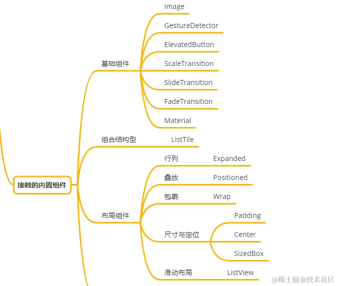

- 01 前言-教程内容导读.md.html
- 02 Flutter 开发环境的搭建.md.html
- 03 新手村基础 Dart 语法 (上).md.html
- 04 新手村基础 Dart 语法 (下).md.html
- 05 Flutter 计数器项目解读.md.html
- 06 猜数字界面交互与需求分析.md.html
- 07 使用组件构建静态界面.md.html
- 08 状态数据与界面更新.md.html
- 09 校验结果与提示信息.md.html
- 10 动画使用与状态周期.md.html
- 11 猜数字整理与总结.md.html
- 12 电子木鱼界面交互与需求分析.md.html
- 13 电子木鱼静态界面构建.md.html
- 14 计数变化与音效播放.md.html
- 15 弹出选项与切换状态.md.html
- 16 用滑动列表展示记录.md.html
- 17 电子木鱼整理与总结.md.html
- 18 白板绘制界面交互与需求分析.md.html
- 19 认识自定义绘制组件.md.html
- 20 通过手势在白板上绘制.md.html
- 21 白板画笔的参数设置.md.html
- 22 撤销功能与画板优化.md.html
- 23 应用界面整合.md.html
- 24 数据的持久化存储.md.html
- 25 网络数据的访问.md.html
- 26 教程总结与展望.md.html
- 捐赠
12 电子木鱼界面交互与需求分析
1. 界面交互介绍
电子木鱼是本教程的第二个案例，相比于猜数字项目，功能需求比较复杂一点，适合新手朋友进一步了解 Flutter 相关知识。下面是两个最基础的交互：
- 点击木鱼图片发出敲击声，并增加功德，展示增加动画。
- 点击标题栏右侧按钮，近进入功德记录页面。
| 点击木鱼 | 查看功德记录 |
|---|---|
光是点击图片发出音效未免有些单调，这里提供了两个选择功能，让应用的表现更丰富一些。
- 点击右上角按钮，选择木鱼音效
- 点击右上角按钮，选择木鱼样式
| 切换音效 | 切换样式 |
|---|---|
2. 电子木鱼需求分析
现在从数据和界面的角度，来分析一下猜数字中的需求：
- 木鱼点击发声及功德记录
在这个需求中，在每次点击时，需要产生一份记录数据，并将数据添加到列表中。这份记录数据包括 增加量、记录时间、当前音频、当前图片 四个数据。所以可以将四者打包在一个类中作为数据模型，比如定义 MeritRecord 类型：
class MeritRecord {
final String id;
final int timestamp;
final int value;
final String image;
final String audio;
MeritRecord(this.id, this.timestamp, this.value, this.image, this.audio);
Map<String, dynamic> toJson() => {
"id":id,
"timestamp": timestamp,
"value": value,
"image": image,
"audio": audio,
};
}
对于界面来说，当功德记录发生变化时，触发当前功德的展示动画，功德数字会进行透明度、移动、缩放的叠加动画；进入功德详情页是，功德记录列表的数据将被传入其中，作为界面构建时的数据信息。由于数据量会很多，所以视图需要支持滑动。
- 音效和样式的选择
这两个需求的操作流程是类似的。拿音频来说，需要的数据有：支持的音频列表，列表中的每个元素需要有名称和资源两个数据，也可以通过一个类进行维护：
class AudioOption{
final String name;
final String src;
const AudioOption(this.name, this.src);
}
有了支持的列表数据，还需要当前激活的数据，这里维护 int 型的激活索引，即可通过列表获取到激活数据。对于木鱼样式来说也是一样，通过一个类型维护每种样式需要的数据:
class ImageOption{
final String name; // 名称
final String src; // 资源
final int min; // 每次点击时功德最小值
final int max; // 每次点击时功德最大值
const ImageOption(this.name, this.src, this.min, this.max);
}
对于界面来说，需要处理按钮的点击事件，从底部弹出选择的面板，在选择之后隐藏。选择面板中根据数据列表展示可选项，并根据激活索引控制当前的激活状态。
3. 电子木鱼中的知识点
首先，电子木鱼项目会 额外 接触到如下的常用组件，大家再完成电子木鱼项目的同时，也会了解这些组件的使用方式。

另外，会对 Flutter 中的界面相关的知识有进一步的认知：
- 数据模型与界面展示
- 组件的封装性
- State 状态类的生命周期回调
- 组件有无状态的差异性
- 界面的跳转
最后，Flutter 中可以依赖别人的类库完成自己项目的某些需求，将在电子木鱼项目中了解依赖库的使用方式。通过多种动画变换的使用，也可以加深对动画的理解。
- 资源配置与依赖库的使用
- 多种动画变换
- 短音效的播放
- 唯一标识 uuid
界面交互和需求分析就到这里，下面一起开始第二个小项目的学习吧！
© 2019 - 2023 Liangliang Lee. Powered by gin and hexo-theme-book.